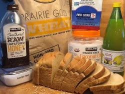
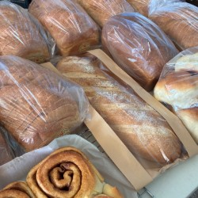

Hello

My name is Carin Gardner. I am the Carin G. of CarinG Kitchen. I run a small home baking business from my home. I make a wide variety of bakery products for friends and family in Henderson, NV. You can see the items I sell by clicking the "Products" link. I am also a student at BYU Pathway pursing a Software Development degree in my spare time. I am a mother of 5 mostly grown children and have been happily married since 1997. My husband and children are huge supporters of my baking and educational goals.
My Baking Journey
One day,I found a piece of bread that had fallen in a dark place. The bread had gotten stale, but hadn't molded. I thought to myself, "what am I putting in my body that even mold won't eat?" I assured my husband that if we bought a stand mixer I would use it to make healthier bread for our family than what we were buying at the store. My first loaves were definitely not beautiful, but they tasted great and I felt better about what we were eating. Over the course of years, I experimented with new recipes and worked on perfecting my method. I truly enjoyed creating a product I was proud of. I loved giving my bread to friends and neighbors whenever I had the time. Some of my friends told me they would buy my bread if I ever thought of selling it. I worried that baking for money would take the joy out baking.
Caring Kitchen
My kids grew up and started college and serving missions for our church. We found ourselves needing a little more income. I went and got a part-time job at a bakery and then a fast-food restaurant. My home-baking took a break. However, after a while, I injured my foot in such a way that I could no longer be on my feet for multiple days in a row. I thought about my friends that had offered to pay me for my bread and I tested how much standing my foot could take. I realized I could bake 3-4 batches a day as long as I had a day between baking. Caring Kitchen was born. I started selling various breads to my friends and family in October of 2021.